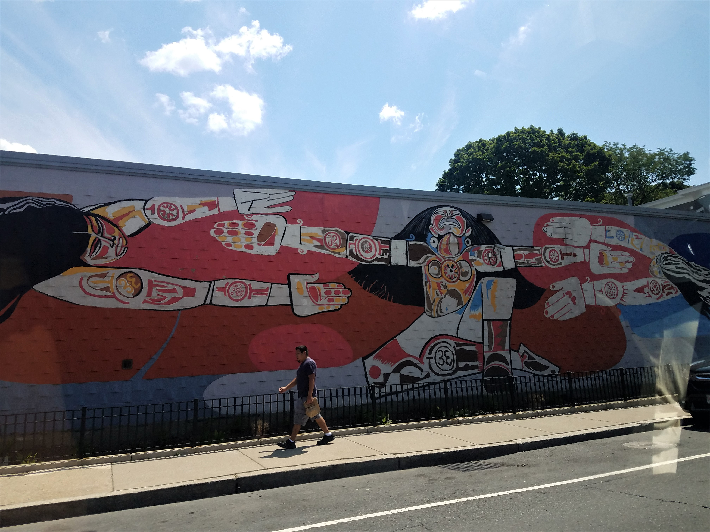

My name is Jacqueline Mercado and I was born and raised and still live in Roxbury, Mass. I love my community and while there is history here, there is beauty here too.
With this website I hope to connect you to the art community. My mission is to present an interactive website that allows people to share their experience and particular
peices that resounded in them. I would love for users to add pieces and make this a hub for art enthusist.
Sometimes it's nice to just stop and smell the roses. So stop and look around appreciate what the Boston community can show you.